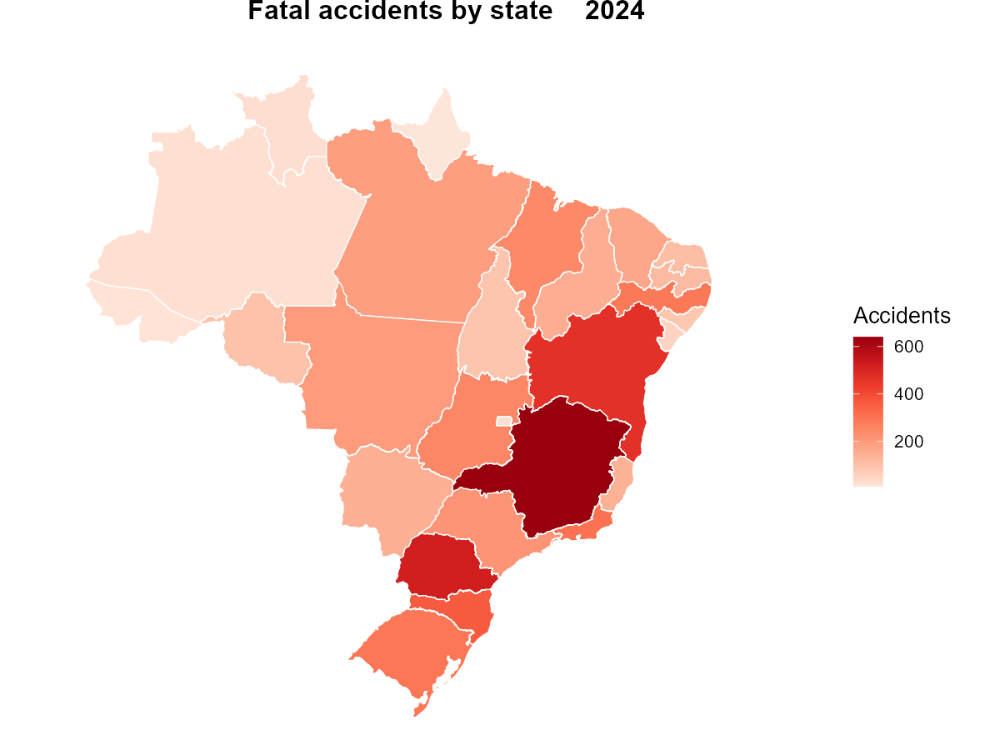

tidyprf provides access, from R, to public road safety datasets made available by the Polícia Rodoviária Federal (PRF). These include data on accidents by person, accidents by occurrence, and traffic violations.
The package allows users to select the desired dataset and year, returning the data in tabular format. Files are distributed in Parquet format via GitHub Releases and stored in a local cache after the first download.
Quick example
Map fatal accidents across Brazilian states in 2024:
library(tidyprf)
library(geobr)
library(dplyr)
library(ggplot2)
fatal <- get_crashes(2024, severity = "fatal") |>
count(uf, name = "acidentes")
read_state(year = 2020, showProgress = FALSE) |>
left_join(fatal, by = c("abbrev_state" = "uf")) |>
ggplot() +
geom_sf(aes(fill = acidentes), color = "white", linewidth = 0.3) +
scale_fill_distiller(palette = "Reds", direction = 1, name = "Accidents") +
labs(title = "Fatal accidents by state (2024)") +
theme_void(base_size = 13) +
theme(plot.title = element_text(hjust = 0.5, face = "bold"))
Installation
Install the development version from GitHub:
# install.packages("remotes")
remotes::install_github("bonijoao/tidyprf")Datasets
| Dataset | Function | Unit | Available Years |
|---|---|---|---|
| Accidents by person | get_accidents() |
1 row per person | 2007–2026 |
| Accidents by occurrence | get_crashes() |
1 row per accident | 2007–2026 |
| Traffic violations | get_violations() |
1 row per violation | 2019–2020, 2022–2026 |
All three functions support filtering by:
-
uf— state abbreviation(s), e.g."SP",c("SP", "RJ") -
br— federal highway number(s), e.g.101,116 -
severity—"fatal","injured", or"no_victims"(accidents only)
Use info_accidents(), info_crashes(), or info_violations() to see all variable descriptions in English or Portuguese.
Cache
Parquet files are cached locally after first download:
prf_cache() # show cached files and sizes
prf_cache_clear() # delete all cached files
prf_years("accidents") # available years and row counts per datasetData source
Raw data are published by the PRF on the Brazilian federal government open data portal. The consolidation pipeline that converts the raw CSV files into the Parquet files consumed by this package lives at bonijoao/tidyprf-dados.